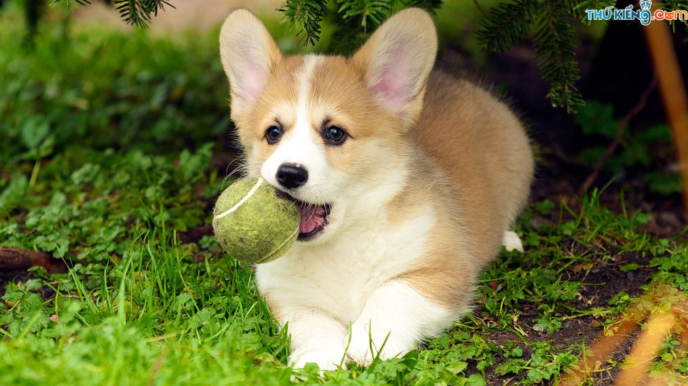
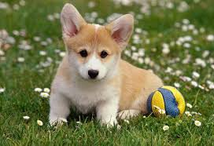
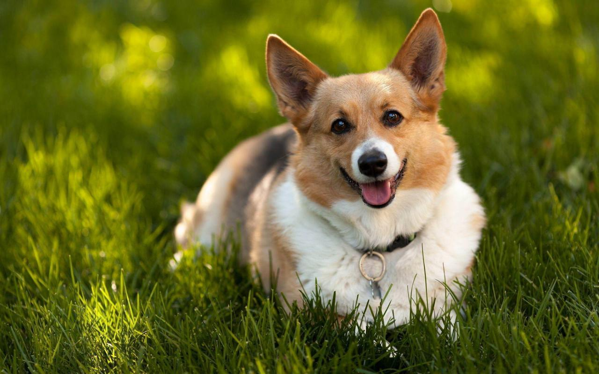

Chó Corgi xứ Wales cổ (Cardigan Welsh Corgi) là loại chó có xuất xứ từ Anh quốc ở xứ Wales, chúng thuộc giống chó chăn gia súc và chó săn đuổi, chúng đặc biệt thích chặn các con chuột xâm nhập lãnh địa để chơi trò đuổi bắt chuột. Chúng hay cắn vào gót chân của các con gia súc, thậm chí cả người, thân thể thấp lùn của chúng, giúp chúng tránh bị gia súc đá hậu.
Có hai loại chó Corgi khác nhau, được đặt theo tên xứ Wels cổ, nơi chúng được phát hiện. Loại Pembroke Corgi là giống xưa nhất và hiện đã trở thành phổ biến, có thể là do chúng có liên quan tới Hoàng gia Anh. Đặc điểm của giống chó này là đuôi ngắn và dựng đứng, tai vểnh nhọn. Người anh em của chúng là Pembroke Welsh Corgi. Trong truyền thuyết, giống chó Pembroke Welsh Corgi được các nàng tiên dùng để đi lại. Ngày nay, chúng nổi tiếng vì là loài chó yêu thích nhất của Nữ hoàng Elizabeth đệ nhị cũng như của các thành viên hoàng tộc.
Giống Cardigan Corgi thì ngược lại đuôi dài và tai tròn hơn. Chúng trông lớn hơn và đôi chân phục phịch. Về tập tính, Pembroke Corgi có khuynh hướng năng động hơn Cardigan Corgi. Cả hai giống Corgi này đều có một quá trình lịch sử lâu dài tại xứ Wales, và chúng ta có thể truy tầm dấu vết tổ tông của chúng, ngược về thời Swedish Valhund một ngàn năm trước khi chúng bị những kẻ xâm lược Viking mang đến vùng này. Ngày nay, cả hai giống Corgi này đều tồn tại như nhau.
